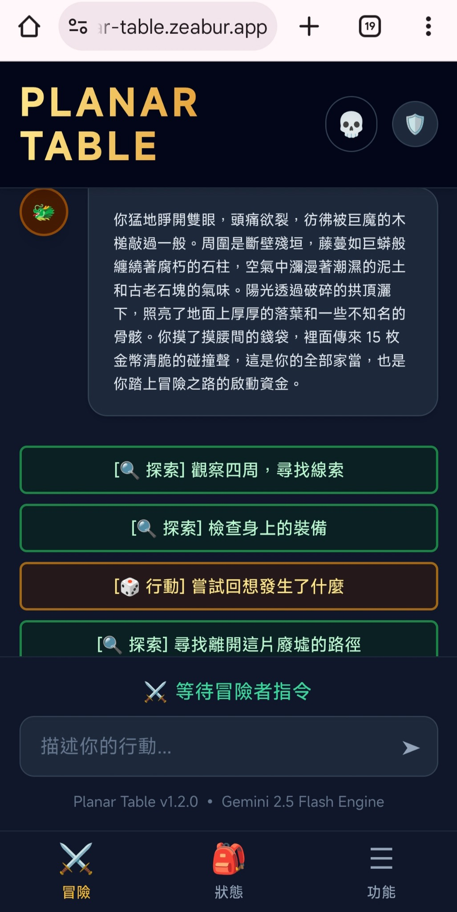
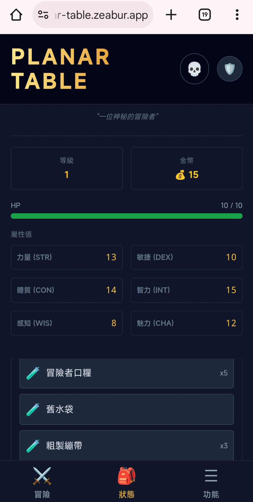
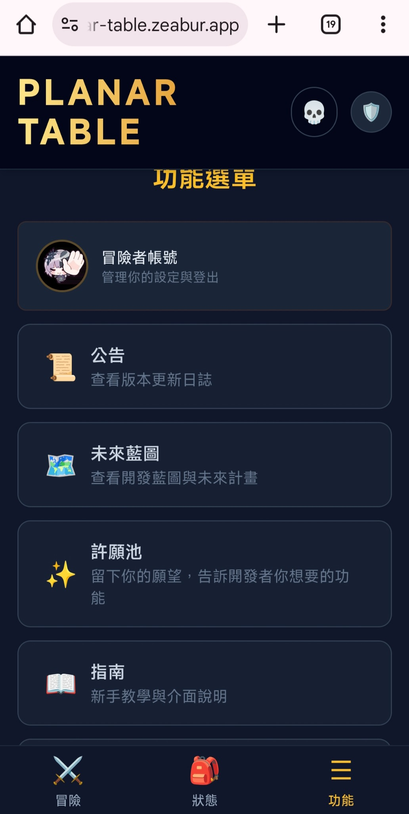

敘事引擎 Narrative Core
負責場景氣味、NPC 語氣、玩家行動後果與分支敘事。它接受「規則層已確認的結果」，再轉化成具沉浸感的文字。
- 高自由度自然語言輸入
- NPC 對話與氣氛生成
- 繁中語氣與在地文本調校
負責場景氣味、NPC 語氣、玩家行動後果與分支敘事。它接受「規則層已確認的結果」，再轉化成具沉浸感的文字。
負責 D&D 5e 角色資料、HP、物品、技能檢定與資料庫保存，降低大型語言模型在數值上自說自話的風險。
依照附檔截圖，產品核心介面是手機優先的三分頁：冒險、狀態、功能。新版官網不再只放示意圖，而是把 MVP 真實畫面放進產品頁，讓評審與使用者一眼看懂目前能玩什麼。



「ChatGPT 可以講故事；Planar Table 會記得你還剩幾滴血。」
這句能快速區分通用 AI 與產品型 AI 遊戲：通用 AI 生成文本，Planar Table 則以資料結構維持遊戲後果。